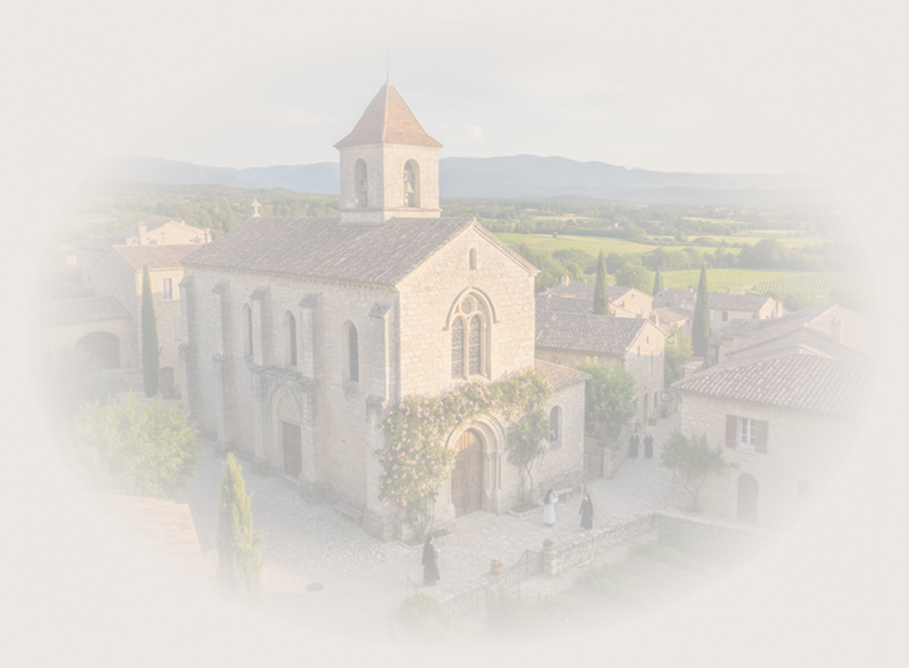

Sobre Nós
Tudo começou em 2018 quando as freiras beneditinas da cidade de Saint-Vallier, um vilarejo da França, precisaram arrecadar fundos para a restaurar e preservar seu secular convento, a partir daí, decidiram confeccionar bolsas com o que elas tinham de melhor, a arte do bordado, e começaram a comercializar em mercados locais nas proximidades do convento.
O que elas não esperavam era que a qualidade excepcional de cada peça atrairia pessoas de diversos vilarejos, que viajavam em busca de um produto feito com tanta dedicação.
Hoje, seus produtos cruzaram froteiras através do e-commerce e sustenta vários projetos sociais na região.
Ao adquirir nossos produtos Marguerite Sacs, você leva consigo a tradição de um trabalho feito à mão e apoia diretamente a continuidade da nossa missão.